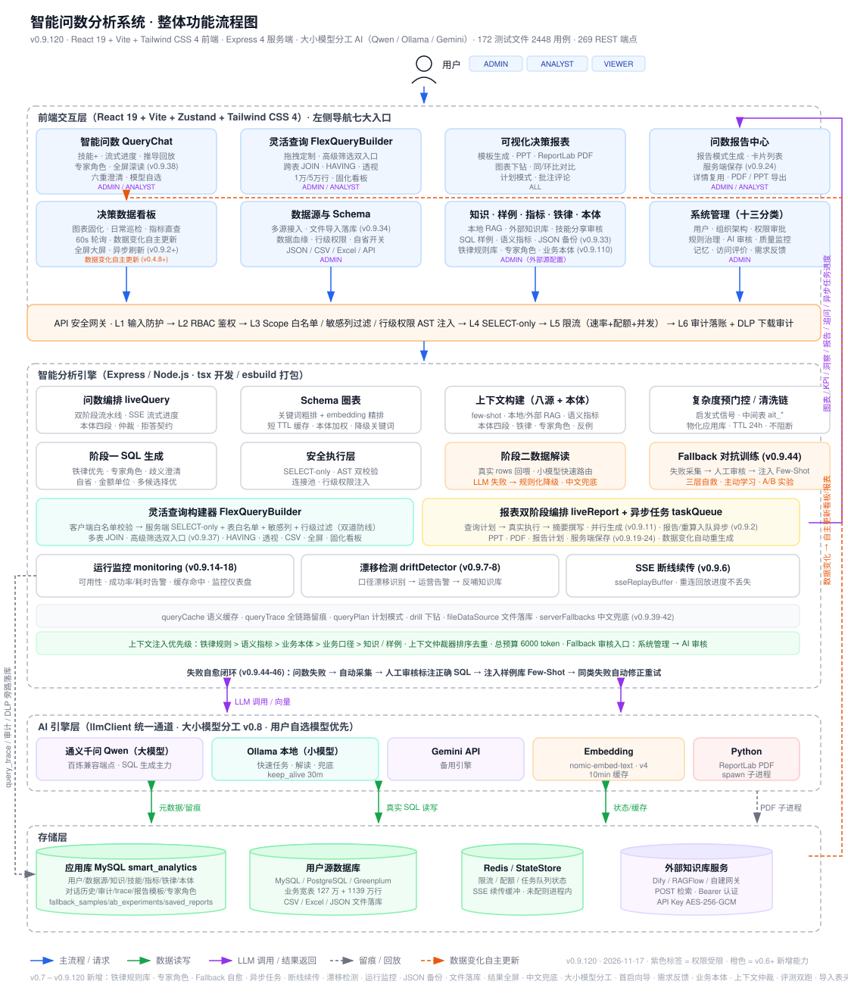
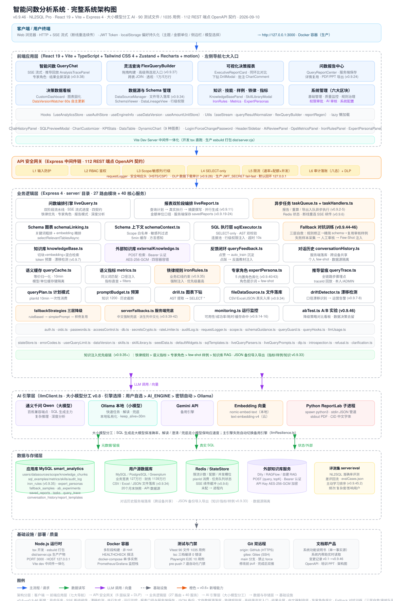
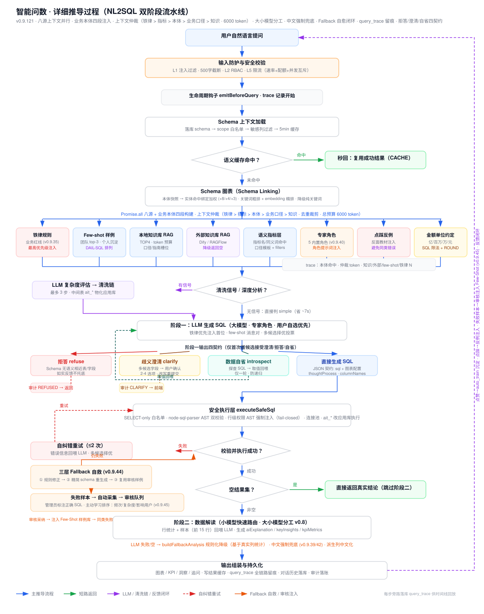

参赛作品 · 系统功能介绍 · NL2SQL PRO V0.9.119
智能问数分析系统
系统功能介绍
把不确定性关进确定性边界 —— 中文提问 → 可信 SQL → 真实数据 → 图表、报告与决策简报
作品形态
Web + PWA 双形态；单机 / Docker / 离线包三种交付
能力覆盖
九大功能域 · 三类角色 · 269 个 REST 端点
工程规模
172 测试文件 / 2438 用例 · 19 条 E2E · CI 全门禁
各位评委好，我介绍的作品是智能问数分析系统，版本 v0.9.119。它要解决的问题一句话就能说清：企业里最贵的等待不是算力，而是「提一个数据需求、排队、等分析师写 SQL」这一段。这个系统把这段链路压成一次中文对话——你用业务说法提问，它理解语义、圈出相关的表、生成 SQL、真实执行，再把结果变成图表、KPI 和解读，最后还能一键产出报告和决策简报。但只有「能查」是不够的，企业真正不放心的是三件事：结果对不对、有没有越权、出了事能不能追溯。所以这个作品的定位不是「又一个 NL2SQL 工具」，而是把模型的不确定性关进确定性边界里——模型可以犯错，但不能越权。后面三十页，我会按「问题与定位、能力全景、可信机制、工程与价值」四个篇章展开，每一页都有可核对的数字，不吹能力边界。
CONTENTS · 阅读路径
四个篇章：从问题，到能力，到证据
不是功能罗列，而是按评委最关心的顺序组织：为什么需要它、它能做什么、凭什么可信、交付到什么程度。
PART 01
问题与定位
五类业务痛点
三个信任缺口
作品定位与九大功能域
角色、组织与授权边界
PART 02
能力全景
六层架构与问数主链路
问答 · 报告 · 报表 · 看板
灵活查询 · 数据接入
规则治理六类资产
PART 03
可信机制
上下文仲裁与预算
统一记忆体与自愈闭环
系统管理与需求反馈
安全纵深 · 可观测 · 帮助中心
PART 04
工程与价值
测试分层与评测口径
CI 门禁与部署交付
五个创新点与应用价值
演进规划与能力边界
全册口径：v0.9.119 · 九大功能域 · 系统管理十三分类 · 269 个 REST 端点 · 172 个测试文件 / 2438 条用例 · 19 条端到端用例。所有数字均取自当前仓库实测，不含估算。
先说结构。这份介绍不按左侧菜单顺序讲功能，因为评委不关心菜单有几项，关心的是三件事：你解决了什么真问题、你的能力有没有覆盖完整、你凭什么让我相信它能在生产里跑。所以分四个篇章。第一部分讲问题和定位，先把企业真实的痛点亮出来，再看这个作品怎么定位。第二部分是能力全景，一张总图加九个功能域，重点讲问数主链路、报表看板、灵活查询、数据接入和治理资产。第三部分是可信机制，也是这个作品最有含金量的地方：上下文怎么仲裁、记忆怎么召回、失败怎么变养料、安全怎么做纵深、故障怎么举证。第四部分是工程与价值，包括测试与评测、CI 门禁、三种部署形态和离线交付，最后讲创新点、应用价值和演进规划。全册数字都是仓库实测口径，我在页脚都标注了，方便核对。
PART 01 · 问题
能查 ≠ 可信：企业不敢把它放进生产
通用 NL2SQL 已经能「跑出数」，但真正落地时会撞上五个业务痛点和三个信任缺口。
五类业务痛点
取数排队
业务提需求、分析师写 SQL、跑数做图写结论，一个来回常常半天
口径不一
同一个「不良率」，三个部门三套算法，会上先吵半小时口径
门槛太高
不会 SQL 就只能等；会 SQL 的人被重复取数占满，没时间做建模
AI 结果不敢用
模型直接给结论，数字对不对无法验证，重要场合没人敢签字
出事说不清
谁查了什么、为什么这么算、慢在哪一步，事后全凭回忆
三个信任缺口
① 生成即执行：模型写完 SQL 直接跑，越权与全表扫描无人拦
② 只看结果不看过程：给了结论不给依据，无法判断是算出来的还是编出来的
③ 无法追溯：从结论回不到 SQL、回不到表、回不到原始数据
因此我们把目标改写为
不是追求「一次生成就对」，而是保证即使生成错了也不会越权、不会拖垮库、不会伪装成正确答案；再用治理资产与反馈闭环把准确率一点点抬上去。
一句话解法：把不确定性关进确定性边界 —— 模型可以犯错但不能越权提示词可优化但不能替代执行层硬约束
先讲问题，因为不讲清楚痛点，后面的功能就变成了堆料。左边五个痛点，各位应该都熟悉：取数排队、口径不一、门槛太高、AI 结果不敢用、出了事说不清。右边三个信任缺口是我认为更本质的：第一，通用方案是「生成即执行」，模型写完 SQL 直接跑，越权和全表扫描没人拦；第二，它只给你结果不给你过程，你没法判断这个数是算出来的还是编出来的；第三，出了争议无法追溯，从结论回不到 SQL，从 SQL 回不到表和原始数据。所以这个作品的目标不是「一次生成就对」——那是不现实的，任何大模型都做不到稳定——而是保证即使生成错了，也不会越权、不会拖垮数据库、不会把降级结果伪装成正确答案。这就是「把不确定性关进确定性边界」这句话的由来，后面所有的设计都能回到这句话上。
PART 01 · 定位
作品定位：企业级自然语言数据分析工作台
向下连接多类数据源，向上提供问数、报表、看板、报告与治理，横向用权限、审计、监控与知识资产保证可控与可持续。
| 功能域 | 核心能力 | 主要用户 |
|---|
| 智能问答 | 自然语言取数、澄清、计划模式、Agent 编排、深度分析、三级溯源 | 管理员、分析师 |
| 分析报告 | 报告模式、报告中心、模板管理、PDF / PPT / Excel / Word 导出 | 管理员、分析师 |
| 决策报表 | 一键生成、同比环比、下钻、批注、历史维护、异常扫描 | 全部角色 |
| 决策看板 | 图表固化、自动刷新、语义指标直查、预测 / 归因 / 情景推演 | 全部角色（高级分析限 ANALYST） |
| 灵活查询 | 拖拽取数、表关系画布、时间衍生、透视合计、固定报表、订阅 | 管理员、分析师 |
| 数据接入 | 七类数据源、文件导入、Schema 查看、数据血缘、访问授权 | 管理员 |
| 规则治理 | 语义指标、铁律、业务本体、知识库、样例库、专家角色 | 管理员（部分对分析师开放） |
| 系统管理 | 用户、组织、权限审批、巡检、运维事件、配置、反馈、评价 | 管理员 |
| 帮助中心 | 使用指南、业务本体、更新日志、架构图、智能问答 | 全部登录用户 |
这一页是作品的名片。定位是「企业级自然语言数据分析工作台」，三个方向同时成立：向下连接多类数据源，向上提供问数、报表、看板、报告和治理，横向用权限、审计、监控和知识资产保证可控与可持续。表格里是九个功能域，请评委注意第三列：我们不是把所有功能都摊给所有人，而是按角色裁剪。只读用户能看报表和看板但不能问数，分析师能问数能灵活查询但看不到数据源管理，治理资产只有管理员能维护。这种「功能可见性按角色裁剪」的设计，是后面安全章节的基础。另外说明一点：九大功能域不等于九个菜单，前端是七大导航入口，规则治理、系统管理这些是管理员专属入口，避免普通用户被一堆治理菜单干扰。
PART 01 · 全景
一张图看清：从用户角色到存储层

🔎 读图要点
- · 五段穿透：用户角色 → 前端七大入口 → API 安全网关（L1 输入防护 → L6 审计落账）→ 智能分析引擎 → AI 引擎 / 存储层
- · 紫色标注 = 每个入口的权限边界（ADMIN / ANALYST / VIEWER）
- · 橙色高亮 = v0.6 之后新增能力（铁律、专家角色、自愈闭环、异步任务、断线续传……）
- · 底部回环：失败自愈——失败 → 采集 → 人工标注 → 注入样例 → 同类自动复用
一句话：入口不同、底座相同——七个入口共用一条安全网关与一套分析引擎，权限、审计与降级在全系统保持统一。
💡 左侧为矢量图，点击可放大细读。
这张图是整个系统的总图，建议评委多看两眼。从上往下五段：最上面是三类用户角色；第二段是登录后能看到的七大入口；第三段是 API 安全网关，所有请求先过 L1 到 L6 六道关，任何业务路由都绕不过去；第四段是智能分析引擎，问数、报表、监控这些能力真正干活的地方；最底下是 AI 引擎和存储层，模型通道被封装成统一客户端，业务代码不感知厂商。图里紫色小字是每个入口的权限边界，橙色是 v0.6 之后新增的能力。请特别看最下面那条紫色回环——失败自愈闭环，这是这个系统「越用越准」的机制来源。整张图一句话：入口不同、底座相同，所以全系统的安全、审计与降级是统一的，不会出现「这个入口有权限校验、那个入口没有」的裂缝。
PART 01 · 边界
三类角色 · 四级组织 · 数据源级授权
权限不是前端藏菜单，而是服务端在路由层与数据层双重校验；前端路由守卫只负责体验。
| 能力 | ADMIN | ANALYST | VIEWER |
|---|
| 智能问数 / 报告模式 | ✓ | ✓ | — |
| 决策报表 查看 / 生成 | ✓ / ✓ | ✓ / ✓ | ✓ / — |
| 看板 查看 / 高级分析 | ✓ / ✓ | ✓ / ✓ | ✓ / — |
| 灵活查询 | ✓ | ✓ | — |
| 数据源 / Schema / 血缘 | ✓ | — | — |
| 规则治理 | ✓ | 个人维度 | — |
| 用户 / 组织 / 权限审批 | ✓ | — | — |
| 帮助中心 | ✓ | ✓ | ✓ |
🏢 四级组织树
总部 → 机构 → 部门 → 团队；用户「部门」取自树节点，节点改名或调整会自动同步到授权清单。
🔐 数据源是第一道边界
按部门或用户授权；加载 Schema 前先校验授权关系，未授权即使知道数据源标识也取不到数。授权变更写审计并失效相关缓存。
↔️ 行级范围
按数据源配置过滤规则（如限定机构），执行层用 AST 重写注入 SQL；谓词非法或注入失败时拒绝查询，不猜一个「大概安全」的版本。
这一页讲边界。三类角色：管理员、分析师、只读用户。请注意只读用户不能调问数接口，这不是前端把按钮藏起来，而是服务端在路由层校验——前端路由守卫只负责体验，真正的判断在服务端。除了角色，还有两道更细的边界：第一道是数据源授权，管理员可以按部门或用户授予，问数主链路在加载 Schema 之前就校验，未授权的即使知道数据源标识也拿不到数；这道边界还会跟组织架构联动，部门改名会自动同步授权文本。第二道是行级范围，管理员可以给数据源配过滤规则，比如限定某个机构，执行层用 AST 重写把谓词注进 SQL。这里有个关键设计叫 fail-closed：谓词非法、注入失败、表名不在白名单、包含写操作，任一条件成立就直接拒绝，不去猜一个「大概安全」的版本。宁可拒绝，也不放过。
PART 02 · 架构
六层架构：层与层之间用契约解耦

- · 用户与终端层：主流浏览器 + 可安装 PWA；问数用 SSE 接收阶段进度
- · 接入与安全网关层：JWT、角色校验、数据源授权、输入检测、限流配额、安全响应头、审计与 DLP
- · 应用服务层：问数、报表、报告、看板、灵活查询、数据接入、规则治理、系统管理、帮助中心；按路由懒加载
- · 智能引擎层：模型路由、Schema 理解、向量召回、SQL 生成与校验、两阶段分析；引擎级熔断与并发信号量彼此隔离
- · 数据与状态层：MySQL 存元数据与治理资产；业务库只读连接；Redis 可选承载限流、缓存、队列、并发槽
- · 运维与质量层：结构化日志、Prometheus 指标、耗时瀑布、健康检查、异常巡检、混沌演练
三层隔离带来一个直接结果：一个模型故障不会拖垮全部能力——引擎级熔断、并发信号量与耗时窗口互不共享，失败只影响对应能力。
这一页是技术架构。六层，从上到下：终端层支持浏览器和可安装的 PWA；接入层是统一入口，JWT、角色校验、数据源授权、输入检测、限流、安全头、审计和 DLP 都在这一层，任何业务路由都绕不过去；应用服务层承载九大功能域，前端按路由懒加载，避免首屏把全部功能都下载下来；智能引擎层负责模型路由、Schema 理解、向量召回、SQL 生成与校验、两阶段分析；数据与状态层是 MySQL 存元数据、业务库只读连接、Redis 可选承载共享状态；最下面是运维与质量层。请重点看一个设计：引擎级的熔断、并发信号量和耗时窗口是彼此隔离的，不共享。这意味着如果云端模型挂了，只影响需要模型的问数，报表和看板照常；反过来看板的大查询也不会把问数的并发槽吃光。这是可用性设计上很关键的一条。
PART 02 · 核心链路
一次提问的完整流水线：七环节与工程详图

- · ① 理解问题：长度截断、注入检测、历史消毒；歧义则先澄清
- · ② 数据自省：加载 Schema 白名单、剔除敏感列、八源上下文并行召回
- · ③ 圈表与列裁剪：按指标/本体/样例相关性排序，只把真正要用的表和列进提示词
- · ④ SQL 生成：候选生成 + 方言适配（MySQL / PostgreSQL / Greenplum）
- · ⑤ 安全校验：AST 只读校验、表白名单、行级过滤注入、EXPLAIN 预检
- · ⑥ 真实执行：超时中断、行数上限、大查询转后台任务、SSE 断线续传
- · ⑦ 阶段二解读：只消费已执行的结果，生成图表与洞察，全程留 trace
关键结构：生成 SQL 与解释数据被拆成两个阶段，阶段二看不到「未执行的数据」——从机制上切断了「未执行就编造数值」的路径。
这张图是问数的主链路，也是整个作品的机制核心。七个环节：理解问题、数据自省、圈表与列裁剪、SQL 生成、安全校验、真实执行、阶段二解读。请评委重点看两点。第一，第三环节的列裁剪：几十上百张表不可能全塞进提示词，系统按指标、本体、样例的相关性排序，只把真正要用的表和列送进去，这既省 token 也提准确率。第二，也是最重要的一点：生成 SQL 和解释数据被拆成两个阶段，阶段二只消费已经执行出来的结果，看不到任何「还没查的数据」。这一条从机制上切断了「未执行就编造数值」这条路径——不是靠提示词要求它别编，而是靠结构让它没有编的素材。另外每个环节都会写 trace，所以慢在模型、慢在数据库还是慢在网络，事后可以逐段看。
PART 02 · 智能问答（二）
让 AI 不乱猜：澄清 · 计划 · 编排 · 深析
四个机制解决「模型太自信」这件事：该问的时候问，该等的时候等，该拆的时候拆，该只认数据的时候只认数据。
歧义澄清
当「最近一期」可能指报表期也可能指自然月，系统不擅自猜测：返回候选理解与澄清问题，用户选择后携带结果重新生成 SQL。澄清行为写入审计，用于区分「用户未选择」与「系统生成失败」。
计划模式
先由模型产出分析计划（步骤、涉及表、预期产出），不执行 SQL；用户确认后才提交执行。计划带有效期与一次性消费约束，过期、篡改或与问题不匹配一律拒绝——避免「批准的是 A、执行的是 B」。
Agent 多步编排
复杂问题自动拆成子任务（先看趋势、再做归因、最后算贡献度），逐步执行、逐步回填；任一子任务失败可单独重试，不影响已完成步骤，全过程在 trace 中可见。
深度分析两阶段
阶段一只取数、不下结论；阶段二基于真实结果做解读。解读必须引用具体数值，结果为空或降级时明确标注，不给「无数据支撑的洞察」。
共同点：四个机制都在「多问一句、多等一步」，用交互成本换准确率。企业场景里，一次问对的时间成本远低于一次问错后的信任成本。
这一页讲四个让 AI 不乱猜的机制。第一是歧义澄清：当「最近一期」这种说法有多种解释时，系统不猜，它把候选理解摆出来让你选，选完再重新生成。而且澄清动作本身会写审计，这样事后能分清是用户没选，还是系统生成失败。第二是计划模式：先出计划不执行，你确认了才跑；计划带有效期和一次性消费，过期、被篡改、跟问题对不上都会被拒绝，防止「批准的是 A、执行的是 B」。第三是 Agent 多步编排，复杂问题拆成子任务，逐步执行逐步回填，某个子任务失败可以单独重试。第四是深度分析的两阶段，阶段一只取数不下结论，阶段二基于真实结果解读，而且解读必须引用具体数值。这四个机制有一个共同点：都在用交互成本换准确率。企业场景里一次问对的时间成本，远低于一次问错之后重建信任的成本。
PART 02 · 智能问答（三）
结果不只是数字：看得懂、查得回、带得走
一次问数的交付物不止一张表：还有可复核的链路、可引用的图表、可归档的文件。
看得懂
自动选图（趋势 / 对比 / 占比 / 明细）
中文表头与单位归一
金额单位由服务端确定性换算，不交给模型判断
结果全屏投屏
流式阶段进度，长查询不空屏
查得回 · 三级溯源
① 指标口径卡：这个数怎么算的、来自哪张表
② 表关联图：JOIN 关系与圈表理由
③ SQL 与原始数据：可复制、可复跑
每级都能点开，形成「结论 → 依据」闭环
带得走
问数导出 CSV / PDF / Word / Markdown
报表导出 PPT / PDF / Excel / Word
导出文件带导出人、部门、时间与「严禁外传」水印
大结果集走 DLP 审批通道
🖼 结果卡片保留完整上下文可继续追问、重新查询、切换图表、全屏查看、点赞或点踩——追问不会丢上文，点踩直接进入纠错流程。
🧾 每个结果都有状态标记成功 / 缓存命中 / 澄清 / 降级 / 拒绝，五种状态明确区分；降级结果不会被伪装成真实结果。
这一页讲结果。很多 NL2SQL 演示到「出一张表」就结束了，但企业要用的东西比这多。我们给了三层。第一层看得懂：自动选图、中文表头、金额单位归一，这里有个细节——金额单位是由服务端确定性换算的，不交给模型判断，因为金额差一个量级是灾难性的。第二层查得回，也就是三级溯源：指标口径卡告诉你这个数怎么算的，表关联图告诉你 JOIN 是怎么连的、为什么圈了这几张表，最底下是 SQL 和原始数据，可以复制可以复跑。第三层带得走：问数结果能导 CSV、PDF、Word、Markdown，报表能导 PPT、PDF、Excel、Word，导出文件带导出人、部门、时间和「严禁外传」水印，大结果集走 DLP 审批。最后强调两个细节：追问不丢上文；每个结果都有状态标记，降级就是降级，绝不伪装成真实结果。
PART 02 · 分析报告
分析报告：从一次问数到一份可交付材料
报告模式把「问数结果」升级为有章节、有图表、有结论的正式文档；报告中心负责沉淀、检索与复用。
报告模式
对话式生成章节
按模板生成目录与章节；每个章节由真实问数结果支撑，图表与文字自动插入；可对话式追加、删改、重排章节。
报告中心
沉淀与复用
历史报告集中归档，支持按标题、数据源、时间检索；同一份报告可复用为新报告的基线，避免每次从零写。
多格式导出
一次生成，四处交付
PDF 用于归档与报送、PPT 用于汇报、Excel 用于二次加工、Word 用于会签；字体、页边距与图表比例按格式适配。
🧩 模板体系系统预设经营分析、风险简报等模板；管理员可在「权限审批 → 报告模板」维护自定义模板，统一全公司的报告结构。
🔗 数字可回溯报告里的每个数字都能回到那次问数：口径、SQL、数据源一一对应，评审时不需要再问「这个数哪来的」。
典型用途：经营分析会材料 · 监管报送底稿 · 专项复盘报告 · 季度述职简报——把「查数」与「成文」之间的手工环节去掉。
这一页讲分析报告。前面讲的问数是「一问一答」，但企业真正交付的往往是一份报告。报告模式让你用对话的方式生成章节，每一章都由一次真实的问数结果支撑，图表和文字自动插进去，还可以继续对话式地追加、删改、重排。报告中心负责沉淀，历史报告可以检索，也能拿一份旧报告当基线改。导出支持 PDF、PPT、Excel、Word 四种，因为归档、汇报、二次加工、会签是四个不同的场景。这里最值得说的一点是数字可回溯：报告里的每个数字都能点回那次问数，口径是什么、SQL 是什么、来自哪个数据源，一一对得上。评审的时候最怕问「这个数哪来的」，在这个系统里这个问题不需要靠回忆回答。
PART 02 · 报表与看板
决策报表与决策看板：给管理者的两个视图
报表解决「这一期怎么样」，看板解决「现在怎么样、接下来会怎样」。
决策报表 · 高管一页纸
- · 一键生成：选数据源与期间，自动产出 KPI 卡 + 趋势 + 结构 + 明细
- · 同比环比：自动计算并标注基期，避免口径混用
- · 下钻：从汇总逐层点到机构 / 部门 / 明细
- · 批注：业务方直接在图表上留意见，形成讨论留痕
- · 历史维护：每期报表归档，可对比任意两期
- · 异常扫描：口径校验 + 时序重算 + 维度检测 + 领域阈值，命中即预警
决策看板 · 持续观测
- · 图表固化：把问数结果固化为常驻图表，支持排序与布局
- · 自动刷新：按周期刷新，打开即是当前值
- · 语义指标直查：看板直接引用指标口径，全公司同一算法
- · 预测：基于历史序列给出趋势外推与区间
- · 归因：把变化拆到维度与贡献度，回答「为什么涨 / 为什么跌」
- · 情景推演：调整假设参数，看结果如何变化
权限设计：报表与看板的查看对全部角色开放；生成、固化与高级分析（预测 / 归因 / 推演）限 ADMIN 与 ANALYST——保证管理者随时能看，但不会误改口径。
报表和看板经常被混在一起讲，其实两者解决不同问题。报表解决「这一期怎么样」：选数据源和期间，一键生成 KPI 卡、趋势、结构、明细，自动算同比环比并标注基期，能逐层下钻，业务方可以在图上留批注，每期归档后还能对比任意两期。异常扫描是报表里很实用的能力，它做四件事：口径校验、时序重算、维度检测、领域阈值，命中就预警。看板解决「现在怎么样、接下来会怎样」：图表固化、自动刷新、语义指标直查，再往上加预测、归因和情景推演。权限上我们做了区分：看对所有人开放，但生成、固化和高级分析只给管理员和分析师，这样管理者随时能看，又不会误改口径。
PART 02 · 灵活查询
灵活查询：不写 SQL，也能自己拼取数
给「知道自己要什么、但不想写 SQL」的分析师：拖字段、拉关联、选粒度，后台自动拼装 SQL。
拖拽取数
行 / 列 / 值三区拖放；字段带中文别名与类型提示，拖动即预览结果。
表关系画布
图形化建关联（v0.9.79）：拖表连线、选基数与关联列，自动生成 JOIN 条件。
时间衍生
年 / 季 / 月 / 周 / 日粒度切换；同比、环比、累计、移动平均一键生成。
计算字段
常用四则与比率、占比、差值公式；公式可命名复用，避免每人一套算法。
透视与合计
行列互换、分组小计、总计；筛选与排序条件可视化维护。
固定报表与订阅
保存为固定报表，配置周期订阅；大查询转后台任务，完成后回填结果。
与问数的分工：问数适合「探索式、说不清要什么」；灵活查询适合「口径已定、要固定报表」——两者共用同一套权限、行过滤与导出通道。
灵活查询是给分析师的一个补充入口。有些需求其实很清楚，就是要「按机构、按月、看三个指标」，这种需求让模型去理解反而绕，不如直接拖。所以这里有六个能力：拖拽取数、表关系画布、时间衍生、计算字段、透视合计、固定报表与订阅。表关系画布是 v0.9.79 加的，图形化拖表连线，选基数和关联列，系统自动生成 JOIN 条件，这对不熟 SQL 的人非常友好。订阅和后台执行解决的是「报表要定期看」的场景，大查询转后台，跑完回填。最后说分工：探索式、说不清要什么的时候用问数；口径定了、要固定报表的时候用灵活查询。两者共用同一套权限、行过滤和导出通道，不会出现「这边有脱敏、那边没有」的裂缝。
PART 02 · 数据接入
数据接入：七类数据源，接入即就绪
新增数据源不只是「连上」，而是自动完成 Schema 分析、范式预置与语义索引，让它当天就能被问。
七类数据源
MySQL · PostgreSQL · Greenplum（关系型与分析型）
CSV · Excel · JSON · API（文件与接口）
新增 / 编辑 / 删除、连接测试、启停问数、查看表结构与行数。
文件导入
单文件 ≤ 7MB、2 万行、100 列；解析真实数据并落库，导入后可像数据库一样问数、做报表与灵活查询。
表头含密码、身份证等敏感词的列自动剔除并明示；导入为静态快照。
数据血缘
基于已保存的真实 SQL 解析「哪张表被哪些报表、图表、指标使用」；实线=解析、虚线=声明式，引用的表不存在标红。点节点看下游影响清单。
接入即就绪（四件事自动完成）
- ① Schema 深度分析：识别时间列、分类维度、指标列与快照 / 版本字段
- ② 异常扫描配置：按识别结果生成扫描项
- ③ 铁律模板与知识骨架：预填可改，管理员在此基础上精修
- ④ 语义索引 + 范式样例：趋势、排名、最新快照、版本过滤、去重计数、计数兜底
📐 方言差异显式处理
MySQL、PostgreSQL、Greenplum 在日期函数、分页语法、标识符引用上不同；系统在生成与执行两层识别方言，避免「在 MySQL 能跑、在 Greenplum 报错」。
🔑 访问授权
按部门或用户授予；与组织架构联动，部门改名自动同步授权文本。
数据接入看起来是个常规功能，但我们多做了一步：新增数据源不只是「连上」，而是自动完成四件事。第一步 Schema 深度分析，识别时间列、分类维度、指标列和快照版本字段；第二步按识别结果生成异常扫描配置；第三步预填铁律模板和知识库骨架；第四步建语义索引，并按表结构预置趋势、排名、最新快照、版本过滤、去重计数、计数兜底这些范式样例。这四件事做完，一个新数据源当天就能被问，不需要从零补录。文件导入限制是单文件 7MB、2 万行、100 列，敏感列会自动剔除并告诉你剔了哪些。血缘基于系统里已保存的真实 SQL 解析，实线是解析出来的，虚线是人工声明的，引用的表不存在会标红。最后提一句方言：三种数据库的日期函数、分页语法都不一样，我们在生成和执行两层都识别方言，避免「开发环境能跑、生产报错」。
PART 03 · 规则治理
六类治理资产：把口径从个人经验变成组织资产
统一入口、分 Tab 管理；覆盖「口径、约束、语言、经验、视角」五个维度，全部支持版本、审批、导入导出与审计。
语义指标
口径怎么算
名称、口径表达式、来源表、固定过滤、单位与审批状态；问数、报表、看板、灵活查询共同引用，全系统同一算法。
铁律规则
什么不能做
按数据源定义强制规则（如「禁止跨法人统计」「只取最新一期」），逐条注入每次生成；与问题或样例冲突时一律按铁律执行。
业务本体
谁是谁、怎么连、值什么意思
实体与绑定、值域释义、关联路径、业务层级四类资产；命中后先给圈表加权，再以四段提示词注入。
业务知识库
术语怎么讲
业务术语、口径说明、枚举写法与注意事项；本地向量 + 词法 RRF 融合检索，支持外部知识源接入与向量重嵌。
SQL 样例库
SQL 怎么写
「问题—SQL」训练样例，支持批量导入、个人沉淀与管理员审核；按问题相似度挑选注入，提升同类问题稳定性。
专家角色
从什么视角解读
角色名 + 触发关键词 + 提示词；命中即启用对应视角。内置风险管理、客户分析、财务分析、不良处置与默认金融分析师。
为什么这就是竞争力：通用 NL2SQL 每次都要重新解释业务；这里把解释成本一次性沉淀为资产，新员工第一天就能得到和老员工同口径的答案。
这一页是治理资产总览，也是我认为这个作品和「通用 NL2SQL」最大的差别。六类资产，每一类回答一个问题：语义指标回答「口径怎么算」，铁律回答「什么不能做」，业务本体回答「谁是谁、怎么连、值什么意思」，知识库回答「术语怎么讲」，样例库回答「SQL 怎么写」，专家角色回答「从什么视角解读」。它们覆盖口径、约束、语言、经验、视角五个维度，而且全部支持版本、审批、导入导出和审计——不是一堆散落在文档里的说明，而是有版本、可回滚、有审批的组织资产。为什么这件事重要？因为通用方案每次对话都要用户重新解释业务，而这里把解释成本一次性沉淀下来，结果是新员工第一天问出来的数，和老员工是同一个口径。这是长期价值，比生成 SQL 快几百毫秒重要得多。
PART 03 · 业务本体
业务本体：让系统听懂业务说法
系统听得懂表名，却常听不懂「存量客户」「核销版」这类业务说法——本体就是把这种说法登记成机器可用的四类资产。
🏷 实体与绑定
名称 / 别名 / 描述绑定到「表.列」；名称与别名×10、描述 bigram×2 匹配，可选 embedding 精排，失败自动降级。
🔢 值域释义
字段取值 → 业务含义（如 BB=1 核算版）；既是提示词素材，也是「表.列=值」冲突裁剪依据。
🔗 关联路径
登记真实 JOIN 关系（基数 / 关联列 / 用途），内存 BFS ≤3 跳预览最短路；血缘图以青色边呈现。
🪜 业务层级
总部 → 机构 → 部门 → 团队，统一维度口径，问「各机构」时不再各表一套叫法。
软提示，不越权：本体只影响圈表加权与提示词，不改变权限、不放开表白名单；执行层仍以 Schema 白名单与铁律为准。无本体数据时零注入、零行为变化。
一次问数的本体链路
① 圈表前加载本体快照
五类 ACTIVE 资产并行加载，失败返回空快照、不阻断问数
② 实体匹配 + 绑定加权
IDENTITY +8 / RELATION_KEY +4 / ATTRIBUTE +3，单表封顶 +15
③ 列裁剪后构建四段提示词
【业务实体】【值域释义】【关联路径】【业务层级】+ 约束，预算 1500 token
④ 上下文仲裁
铁律 > 指标 > 本体 > 业务口径 > 知识；去重、冲突裁剪，总预算 6000 token
⑤ 留痕与 A/B
trace 增「业务本体命中」「上下文仲裁」两步；ADMIN 可单次 disableOntology 对照
这一页讲业务本体，v0.9.110 引入。它解决的是一个很具体的问题：系统听得懂表名，但听不懂业务说法。比如用户说「存量客户」，这到底指哪张表的哪个字段？用户说「核销版」，BB=1 又是什么意思？本体把这类知识登记成四类资产：实体与绑定，把名称、别名、描述绑到表列，命中后给候选表加权；值域释义，把代码翻译成业务含义，同时作为「表.列=值」冲突裁剪的依据；关联路径，把真实 JOIN 关系登记下来，圈表后知道表怎么连，血缘图里会多一条青色的边；业务层级，统一总部、机构、部门、团队的口径。右边是问数链路，五步，重点是第四步仲裁和第三步的四段提示词。最后强调一句设计原则：本体是软提示，它只影响圈表和提示词，不改变权限、不放开白名单，执行层还是以 Schema 白名单和铁律为准。所以它可以放心灰度——没有本体数据时零注入、零行为变化。
PART 03 · 本体落地
本体怎么建起来：智能预填 · 一键开关 · 顺手维护
本体最大的落地阻力不是技术，而是「几十个实体谁来录」。三段能力把登记成本从一天压到十分钟。
v0.9.112 · 智能预填
读 Schema 自动推断四类资产
① 实体与绑定：按「编号 + 名称」列对生成，跨表同名键自动合并
② 值域释义：只收录真正「代码 ≠ 含义」的编码列
③ 关联路径：共有编号类维度列生成 N:1 LEFT 路径，标注「自动推断，请复核」
④ 业务层级：识别一 / 二 / 三级分类、所属省 / 市等列族
先看再写，不覆盖人工成果：弹窗内四类分组可折叠，每条带推断理由；确认后按业务键幂等写入，同名实体、同键值域、同向关联、同名层级默认跳过，写入留版本快照可回滚。
v0.9.113 · 一键开关
关掉只影响问数，不丢数据
规则治理 → 业务本体，数据源右侧「本体注入」开关：关闭后下一问立即生效，不再加权、不再注入，回到纯 Schema 行为；四类资产、绑定与版本历史完整保留，点一下即恢复。状态写入 ONTOLOGY_ENABLED，与环境配置同源热更，无需改 .env、无需重启。
v0.9.111 · 维护体验
找得到：四页签即时搜索，「仅看未绑定」一键筛漏登记
改不丢：未保存提示 + 切换二次确认 + 一键重置，表列名带 Schema 联想
录得快：批量值域兼容「值=含义」/ 全角等号 / 中文冒号 / Excel 两列，实时提示可写·重复·无法解析
看得懂：停用只退出注入、数据保留；版本历史改为可读摘要
实测（数据源「数据资源」）：2 张宽表 / 298 列 → 自动生成 10 个实体（28 条绑定）、4 条值域、4 条关联路径、4 个业务层级；连续执行第二次 60 项全部跳过，验证幂等；落库后问数四段提示词完整注入 1402 字符，未触发预算截断。
本体最大的落地阻力其实不是技术，而是一句话：「几十个实体、几百个字段，谁来录？」所以 v0.9.111 到 113 这三个版本，做的就是把登记成本降下来。第一，智能预填：选中数据源点一下，系统读已保存的 Schema，按「编号+名称」列对推断实体，按真正的编码列推断值域，按共有的编号类维度列推断 N:1 LEFT 关联，按一二三级分类、所属省市识别业务层级。先给预览，每条带理由，你确认才写入，而且按业务键幂等，重复执行全部跳过，不会覆盖人工维护的内容。第二，一键开关：上了不敢关是很多 AI 功能的通病，这里可以在面板上一键关停，下一问立即生效，但资产一条不丢，开关和环境配置同源热更，做 A/B 对照非常方便。第三，维护体验的一轮优化，搜索、未保存提示、Excel 粘两列、可读的版本摘要。底部是实测数据：两张宽表二百九十八列，一次生成十个实体、二十八条绑定、四条值域、四条关联、四个层级，第二次执行六十项全跳过，注入 1402 字符没有截断。
PART 03 · 上下文工程
上下文仲裁：六路上下文抢一个预算
各路召回都想进提示词，但窗口有限、彼此还会冲突——仲裁器负责排序、去重、裁剪，并把决策写进 trace。
优先级顺序
③ 业务本体
实体 / 值域 / 关联 / 层级，受 1500 token 预算约束
⑤ 知识与记忆
样例、反例、困难样本、统一记忆体召回
三件事同时做
排序：按优先级与相关度排列，高优先级先占预算
跨块去重：同一条知识从多个来源命中时只保留一次
冲突裁剪：按「表.列=值」判定，低优先级块中被判为冲突的条目直接剔除；预算溢出时从最低优先级块尾部削减
预算与观测
本体段 1500 token，全局硬预算 6000 token（不含铁律与指标的强制段）；仲裁统计写入 trace，可解释「为什么这次没注入某条知识」。
可解释性：用户看到的是答案，管理员看到的是「命中了什么、丢了什么、为什么丢」——这是把黑盒变白盒的关键一步。
这一页讲上下文仲裁，是全系统最容易被低估的一块。问数的时候，六路召回都想把自己的内容塞进提示词：铁律、指标、本体、知识、样例、记忆。但窗口是有限的，内容之间还会打架——比如知识库说「核销版 BB=1」，本体说「BB=1 核算版」，同一件事两种说法。仲裁器就是来解决这个的，它同时做三件事：排序、跨块去重、冲突裁剪。排序按优先级，铁律最高，然后是指标、本体、业务口径，最后是知识和记忆；去重是同一条知识多路命中只留一次；冲突裁剪按「表.列=值」判定，低优先级块里被判冲突的条目直接剔除；如果总预算超了，从最低优先级块的尾部开始削。预算是本体段 1500 token、全局 6000 token，铁律和指标的强制段不计入。最后一点很关键：仲裁的统计会写进 trace，所以管理员能看到「这次为什么没注入那条知识」，而不是只能猜。
PART 03 · 统一记忆体
统一记忆体：八通道并行召回与纠错闭环
不是再造一个记忆库，而是把已有资产按统一权重融合召回；用户的一次点踩，最终会变成系统的一条记忆。
融合分 = 相关度 × 置信度 × 时效衰减 × 来源权重；单通道超时 400ms、整体 800ms，超时只降级该通道；全局硬预算 6000 token。第 8 路通过只读 Adapter 复用既有资产，不迁移、不双写。
纠错闭环：一次点踩的旅程
点踩弹层采集
错误类型 + 说明 + 期望 SQL → 进入 PENDING 候选（同问题幂等合并）
管理员审核
系统管理 → 记忆管理；置信度：期望 SQL 1.0 / 管理员 0.9 / 其余 0.4
相似问题优先召回
bigram / embedding，阈值 0.45，最多 2 条注入
按引用回写置信度
赞 +0.05 / 踩 −0.20；90 天未命中且低置信自动归档
灰度安全：MEMORY_ROUTER_ENABLED 三态 off / shadow / on + 按 userId 稳定哈希的灰度百分比；未命中或异常自动回退原七路。
这一页讲统一记忆体，v0.9.106 上线。先说它不是什么：它不是又造了一个记忆库，而是把已有的资产用统一的方式召回。左边八个通道并行跑：语义指标、铁律、知识库、样例、个人历史、点踩反例、困难样本，第八路才是统一的记忆体召回。融合分的公式是相关度乘置信度乘时效衰减乘来源权重，也就是旧的知识会自然衰减，高置信的纠错优先级更高。性能上做了严格约束：单通道 400 毫秒超时、整体 800 毫秒，超时只降级那一个通道，不影响问数。右边是纠错闭环，这是我最想讲的一条链路：用户点踩，选错误类型、写期望口径，进入待审候选；管理员在记忆管理里审核，置信度按来源区分，期望 SQL 给 1.0、管理员手填 0.9、其余 0.4；之后相似问题优先召回这条纠正记忆，阈值 0.45、最多两条；后续用户点赞加 0.05、点踩减 0.20，90 天没命中且低置信自动归档。这样系统就有了会遗忘、会强化的记忆，而不是一个只增不减的垃圾桶。
PART 03 · 自愈进化
Fallback 对抗训练：失败也是养料
问数失败不再只报错——失败样本自动进入审核队列，标注正确 SQL 后注入 Few-Shot，同类问题自动修正。
① 问数失败
SQL 报错 / 理解偏差
真实执行失败
→
→
→
④ 注入样例库
审核通过即注入
Few-Shot 示例
→
🛟 三层自救
失败后依次尝试：规则修正 → 精简 Schema 重生成 → 复用人工审核样例；全程只读安全执行，行级权限不豁免。
🧮 主动学习排序
失败样本按频次 / 复杂度 / 影响用户自动排优先级，管理员从最有价值的样本修起（v0.9.45.2）。
📊 A/B 实验分析
质量监控 → A/B 实验 Tab：对比降级策略真实效果，用数据决定策略去留（v0.9.46）。
审核入口：系统管理 → AI 审核 → 「Fallback 审核」Tab，带优先级排名与批量操作；采纳即注入样例库，拒绝即关闭。
这一页讲对抗训练，v0.9.44 到 46 三个版本打磨出来的。以前的问数系统失败就是失败，用户看个报错就走。现在不一样：任何一次失败——SQL 报错也好、理解偏差也好——样本会自动采集入库，错误信息完整留痕；管理员在队列里看到它，标注一条正确的 SQL，点采纳；这条修正立刻注入 Few-Shot 样例库；以后再有人问同类问题，系统自动复用这条修正，不用再失败一次。相当于系统自带错题本，而且是全团队共享的。失败那一刻系统也没闲着，会依次尝试三层自救：规则修正、精简 Schema 重生成、复用人工审核过的样例——三层全程走只读安全执行，行级权限一点不豁免。排队样本太多修不过来？主动学习按失败频次、复杂度、影响用户自动排优先级。修得有没有用，质量监控里有 A/B 实验看板，用真实数据决定策略去留。
PART 03 · 系统管理
系统管理：十三分类 · 三域分组
左栏按「账号与权限 / 治理与审核 / 运维与系统」三域编排；含多面板的分类，内容区顶部以 Tab 切换。
账号与权限 · 3 分类
用户管理：账号生命周期 · 角色分配 · 重置密码 · 首登强制改密
组织架构：四级组织树，用户部门取自树节点
权限审批：访问审批（部门级数据源授权）· 报告模板
治理与审核 · 6 分类
规则治理：六 Tab 治理资产 + 本体注入开关（环境同源热更）
AI 审核：Fallback 样本 · 导出审批（DLP）
系统体检：环境与资产一键复检
需求反馈：提交 → 评估纳入基线（P0–P3）
记忆管理：统一记忆体 · 纠错候选审核
访问与评价：访问统计 · 评价中心
运维与系统 · 4 分类
质量监控：知识漂移 · 北极星指标 · Token 用量 · A/B 实验
异常巡检：报表波动定时扫描，主动预警
运维事件：异常归集事件流（15 分钟去重）· 闭环处置
系统配置：环境变量与参数集中管理
🚀 首启初始化向导（五步）环境检测 → 模型服务 → 数据自动准备 → 待办事项 → 完成；每步可跳过、可断点续做。无自有数据源时可一键加载演示集（销售 / 营销 / 库存三表 926 行），完成从提问到结果的完整闭环。
🩺 向导之后转为系统体检持续列出未处理的治理待办：模型未配置、知识资产为空、本体未预填、审计未复核——把「部署完」变成「可运营」。
这一页讲系统管理，十三分类分三个域。第一个域管人和权限：用户、组织、权限审批。第二个域管 AI 的规矩，六个分类：规则治理是六类治理资产的统一入口，AI 审核放需要人工判断的两块——Fallback 样本和超阈值的导出审批，系统体检做环境与资产一键复检，需求反馈做需求评估，记忆管理审纠错候选，访问与评价看访问统计和评分。第三个域管运行：质量监控四 Tab、异常巡检、运维事件、系统配置。这里特别介绍首启向导：新部署第一次进去是五步向导，环境检测、模型服务、数据自动准备、待办事项、完成，每步可以跳过也可以断点续做；如果你手上没有数据源，可以一键加载内置的演示数据集，三张表九百多行，十分钟就能走完从提问到结果的完整闭环。向导做完之后它会转成系统体检，持续列出没处理的治理待办，这样「部署完」和「可运营」之间就有了一个可追踪的过渡。
PART 03 · 反馈闭环
需求与评价：把用户意见变成版本基线
两条互不干扰的通道：赞踩用于沉淀知识与纠错，星级用于质量评估；需求走独立的全流程留痕。
全体用户 · 随手提
需求反馈入口
右上角工具栏随时提交：功能需求 / 改进建议 / 问题缺陷 / 其他；弹窗下半区「我的反馈」实时跟踪状态与处理意见。
管理员 · 集中评
评估分析
四张统计卡 + 状态 / 类型筛选；纳入基线必填评估意见、可定 P0–P3 与基线版本；不予采纳写原因；全部操作写入审计。
运维平台 · 主动拉
标准接口开放
已纳入基线经 GET /api/requirements/export 供外部平台增量拉取；/.well-known/requirements.json 自描述能力清单。
👍👎 赞踩 = 训练信号点赞把该问答沉淀为样例供后续召回；点踩弹出纠错面板，选择错误类型并补充期望口径，进入候选池待审。
⭐ 星级 = 质量度量问数结果与整个系统均可打 1–5 星；访问与评价中查看均分、好评率、NPS、趋势、低分关注与明细导出。
隐私口径：访问统计只保留聚合计数，不采集 IP、浏览器标识、访问明细或停留时长。
这一页讲反馈闭环，有两套通道，请不要混在一起。第一套是赞踩，它服务的是模型：点赞把这个问答沉淀成样例，以后相似问题可以召回；点踩弹纠错面板，选错误类型、写期望口径，进入候选池等管理员审。第二套是星级，它服务的是管理：问数结果和整个系统都能打一到五星，管理员在访问与评价里看均分、好评率、NPS、趋势、低分关注，可以导出明细。还有一条独立的需求通道：任何人都能在右上角提需求、建议或缺陷，弹窗下半区能看到自己的反馈走到哪一步；管理员在系统管理里集中评估，纳入基线要填评估意见、定 P0 到 P3 和基线版本，不予采纳要写原因，全部操作进审计；已纳入的条目可以通过标准接口被外部运维平台增量拉取。最后一句是隐私口径：访问统计只保留聚合计数，不采集 IP、浏览器标识和停留时长。
PART 03 · 安全
确定性安全：六层纵深，fail-closed
把权限、只读、白名单、行过滤、超时、行数与金额单位从「提示词约定」升级为「服务端代码约束」。
L1 输入防护
长度截断、注入检测、历史消息消毒，降低提示词注入风险
L2 身份与授权
JWT + 角色 + 数据源访问权限；未授权请求不进入生成环节
L3 范围约束
Schema 只暴露白名单内的表；敏感列进上下文前剔除；行级过滤注入
L4 只读校验
AST 解析，只允许 SELECT；禁写操作与危险函数；识别多语句与注释绕过
L5 执行保护
EXPLAIN 预检扫描行数、语句超时中断、结果行数上限、大查询转后台
L6 审计与防泄漏
查询审计、失败原因与耗时；手机号 / 身份证 / 银行卡 / 邮箱脱敏；导出审批与水印
fail-closed 原则
无法解析、无法注入行过滤、表名不在白名单、包含写操作——任一条件成立即拒绝，不尝试「猜一个安全版本」。宁可失败得明确，不可通过得侥幸。
🛡 DLP 双通道识别
列名命中规则直接判定；未命中列抽样前 50 行做正则匹配。命中后掩码保留首尾（如 138****5678）；管理员默认豁免，可配置关闭。
🧾 三类证据
访问审计：登录、鉴权失败、越权、导出与治理操作
问数审计：问题、状态、行数、耗时与失败原因
推导 trace：圈表、命中、生成与重试、执行、解读
运行基线：生产缺 JWT_SECRET 拒绝启动 · 默认绑定回环地址 · 安全响应头 / HSTS · 敏感配置不回显明文 · 容器非 root。
这一页是安全，也是我认为最应该被评委记住的一页。核心一句话：把权限、只读、白名单、行过滤、超时、行数和金额单位，从「提示词里的约定」升级为「服务端代码里的约束」。六层：L1 输入防护，管提示词注入；L2 身份与授权，未授权不进生成环节；L3 范围约束，Schema 只暴露白名单内的表，敏感列在进上下文之前就剔除，行级过滤在这一层注入；L4 只读校验，用 AST 解析，只允许 SELECT，禁写操作和危险函数，多语句和注释绕过也识别；L5 执行保护，EXPLAIN 预检、超时中断、行数上限、大查询转后台；L6 审计与防泄漏，脱敏加导出审批加水印。整套设计遵循 fail-closed：四个条件任意一个成立就拒绝——解析不了、行过滤注不进去、表名不在白名单、包含写操作，绝不猜一个「大概安全」的版本。右边是 DLP 双通道、三类证据和运行基线。
PART 03 · 可观测与韧性
慢在哪、倒了还活不活：现在都能举证
可观测性不只是排障工具，也是质量运营工具：从 trace 能看到命中了什么、圈了哪些表、SQL 是否重试。
链路追踪（v0.9.114）
一次问数生成完整 traceId 瀑布：HTTP → 记忆召回 → 模型 → SQL → 执行 → 解读；/api/ops/traces 可查
日志带 traceId / spanId，兼容 W3C traceparent
默认采样 500 条，追踪失败不影响主流程（fail-open）
混沌演练（v0.9.115）
四阶段：准备 → 注入 → 观测 → 恢复；8 条断言校验降级行为
默认只采样不注入，执行需 --execute --yes
危险命令直接拒绝；报告落 logs/chaos-reports/
Redis 三件套（v0.9.116–118）
AOF 双持久化：RDB + AOF，损失窗口压到 1 秒
落盘陈旧巡检：/api/health/persistence，超 2 小时返回 503 并触发告警
访问认证：requirepass 48 位，客户端走 REDISCLI_AUTH
演练实测：断开依赖后核心页面保持可用、问数显式降级——Redis 8/8 项断言通过，恢复耗时 4.0 秒；MySQL 8/8 通过，恢复耗时 4 毫秒；健康检查存活返回 200、就绪返回 503、进程未重启。
📈 指标层请求量、错误率、耗时分布、模型调用与 Token 消耗、任务队列积压；Prometheus 采集 + Grafana 面板。
📓 日志层JSONL 结构化输出，按 requestId / traceId 串联；异常自动归集为运维事件（15 分钟去重）。
这一页讲可观测和韧性，也是最近三个版本的重点。链路追踪 v0.9.114：一次问数会生成完整的 traceId 瀑布，从 HTTP 进来、记忆召回、模型调用、SQL 生成、执行到解读，每一段都有耗时；日志都带 traceId 和 spanId，兼容 W3C 的 traceparent 标准；默认采样五百条，而且追踪本身失败不影响主流程，是 fail-open 的。混沌演练 v0.9.115：四个阶段、八条断言，默认只采样不真正注入，要执行必须显式带参数，危险命令直接拒绝，报告落在 logs 下。Redis 三件套是 116 到 118：AOF 双持久化把损失窗口压到一秒，落盘陈旧巡检超过两小时返回 503 并告警，访问认证用 48 位随机口令。底部是实测：断开依赖之后核心页面可用、问数显式降级，Redis 八项断言全过、恢复四秒，MySQL 八项全过、恢复四毫秒，健康检查存活 200、就绪 503、进程没有重启。这就是「倒了还活不活」的举证方式。
PART 03 · 帮助中心
帮助中心：把文档变成可检索、可问答的能力
系统内置五个页签，文档随版本实时读取，不做「发一份 PDF 让大家自己找」。
使用指南
实时读取用户手册，按模块折叠，支持全文搜索与定位。
业务本体
本体操作手册：概念、配置、验收与排障（v0.9.119 新增）。
更新日志
按版本倒序展示用户可感知的变更，口径与仓库一致。
架构图
内嵌推导过程图、功能流程图与总体架构图，可缩放、切主题、查找与导出。
智能问答
章节级检索 + 模型作答，附「参考」章节并支持多轮追问；未覆盖时明确告知，不编造。
🔍 检索能力对使用指南、本体手册与更新日志做章节级检索；命中的段落带出处，点一下直接跳到原文位置。
🧠 不编造承诺文档未覆盖的问题明确回答「文档里没有」，并给出最接近的章节建议——把「幻觉」变成可预期行为。
价值：把培训成本与重复答疑压到最低；新同事入职第一天可以自助完成 80% 的「这个功能在哪、这个指标怎么算」。
帮助中心经常被当成附属功能，但我认为它是产品成熟度的标志。这里有五个页签：使用指南、业务本体、更新日志、架构图、智能问答。前四个都是实时读取仓库里的文档，也就是说文档永远跟着版本走，不会出现「发的 PDF 是上一版」的问题。第五个是智能问答，它做的是章节级检索再加模型作答，答案后面附「参考」章节，点一下能跳到原文；文档里没写的问题，它会明确说没有，而不是编一段听起来很像的答案。这一点很重要——帮助中心自己都不诚实，用户就没法信任问数的结果。价值上，它把培训成本和重复答疑压到最低，新同事入职第一天能自助解决大部分「功能在哪、指标怎么算」的问题。
PART 04 · 工程质量
工程质量：把「我觉得没问题」变成可执行的证据
🧪 五层测试
单元：SQL 解析校验、行过滤注入、缓存键、金额换算、上下文仲裁等纯逻辑
接口：认证、授权、问数、报表、导出、治理资产等路由行为
前端：结果渲染、交互开关、错误与降级状态
端到端：登录、问数、报表、看板、灵活查询关键路径
评测：执行准确率、分类分层、多轮稳定性、A/B 对比
⚖️ 评测口径：执行准确率
生成 SQL 与标准 SQL 分别在目标库执行，比较结果集是否关系等价：忽略列别名与顺序、行内多重集对齐、数值带容差。不比较 SQL 文本相似度。
🚦 CI 门禁（每次提交与合并请求）
TypeScript 类型检查（前端 / 服务端 / 严格模式）→ ESLint（错误阻断合并）→ OpenAPI 与路由一致性校验 → 状态扫描（防进程内状态破坏多实例）→ 单元与接口测试 → 评测集结构校验。
📊 评测集的诚实口径
按问题类型分层：单表聚合、多表关联、时间对比、嵌套子查询、需要澄清、应当拒答、行级权限。每次评测强制旁路缓存，支持多轮均值与跌幅统计；A/B 必须同批用例、同进程。
不粉饰：历史评测中单表聚合与安全行为已达可用水位（安全行为 100%），多维度组合与时间语义仍是短板；稳定性比均值更值得关注。
历史数据仅说明方法与水位，不代表 v0.9.119 当前准确率。
这一页讲工程质量。四个数字：172 个测试文件、2438 条用例、19 条端到端、269 个 REST 端点，全部是仓库实测，单次全量跑完 3.8 秒。五层测试：单元、接口、前端、端到端、评测。评测口径我要特别说明：我们不比 SQL 文本相似度，而是把生成 SQL 和标准 SQL 分别放到目标库执行，比较结果集是否关系等价，忽略列别名和顺序，数值带容差。因为这个指标才关心「算得对不对」，而不是「写得像不像」。CI 门禁有六道：类型检查、ESLint、OpenAPI 与路由一致性、状态扫描、单元接口测试、评测集结构校验；其中状态扫描是防止有人在代码里塞进程内状态，破坏多实例部署。最后一句话我想强调：我们不粉饰。历史评测里单表聚合和安全行为已经可用，安全行为两种引擎都是 100%，但多维度组合和时间语义确实是短板；而且同一套用例三轮跑出来波动很大，所以我们把重点放在多轮稳定性门禁和失败归因上，而不是追逐单次高分。这些数字只说明方法和水位，不代表当前版本的准确率。
PART 04 · 交付
三种部署形态 · 离线可交付
从一台笔记本演示，到多实例生产，同一套代码与同一套配置口径。
单机体验
一台机器装 Node.js 与 MySQL，跑构建产物即可；需要本地模型时同时启动 Ollama。适合演示、培训与小规模试用。
单机生产
在单机基础上加反向代理、HTTPS、独立数据库账号与定时备份；Redis 可选，用于提升限流与缓存一致性。
多实例生产
多实例位于反向代理之后，共享 MySQL 与 Redis；队列、限流、并发槽、计划状态、上传状态全部外置，节点无状态可随时扩缩容。
📦 离线交付包
面向内网与无外网环境提供两种离线包：Windows 10 专业版 22H2 64 位（内置 Node 22 运行时与全部 win32-x64 依赖，解压即用）与 Linux 内网包；均按 45MB 分卷打包，附合并命令与 SHA-256 校验说明。
🔒 运行约束（生产必读）
默认绑定 127.0.0.1，对外需显式配置并由反向代理终止 TLS；缺 JWT_SECRET 拒绝启动；首启自动建表并写初始管理员，首登强制改密；元数据库参数改后需重启，其余多数参数可在线修改即时生效。
数据库随包交付：deploy/sql/upgrade.sql 覆盖 58 张表 / 590 列 / 226 索引，重复执行不报错；npm run db:sql 可从模型生成并校验，保证脚本与代码同源。
这一页讲交付。三种部署形态：单机体验，一台机器装 Node 和 MySQL 就能跑，要本地模型就再起一个 Ollama；单机生产，加反向代理、HTTPS、独立数据库账号和定时备份；多实例生产，队列、限流、并发槽、计划状态、上传状态全部外置到 Redis，应用节点本身不存会话状态，可以随时扩缩容。离线交付是我们专门做的一块：内网环境经常完全没外网，所以我们做了 Windows 10 专业版 22H2 64 位的离线包，内置 Node 22 运行时和全部 win32 原生依赖，解压双击就能起；Linux 也有对应的内网包。两者都按 45MB 分卷，附合并命令和 SHA-256 校验说明，避免大文件在内外网之间搬运时损坏。数据库脚本随包交付，58 张表、590 列、226 个索引，重复执行不报错；而且脚本是从模型生成的，有 npm 脚本做生成与校验，保证脚本和代码同源，不会出现「代码加了字段、脚本忘了改」。
PART 04 · 创新与价值
五个创新点，四类可量化价值
💡 关键创新
两阶段真实数据问数
解释只消费已执行结果，机制上切断「未执行就编造数值」
确定性安全边界
权限 / 只读 / 白名单 / 行过滤 / 超时 / 行数从提示词升级为代码约束
语义资产驱动的持续校准
六类资产覆盖口径、约束、语言、经验、视角，均带版本与审批
全链路可追溯
结论 → SQL → 表 → 原始数据 → 治理资产，逐级可回
优雅降级而非静默失败
模型 / 向量 / 数据库 / 缓存任一故障都有明确降级路径与状态标识
📈 价值一：效率
业务人员分钟级完成过去要排队的取数；分析师从重复取数中释放，转向口径治理与复杂建模。
🧭 价值二：门槛
中文提问、自动图表、中文表头、单位统一，不掌握 SQL 也能独立完成分析。
🏛 价值三：治理
口径从个人经验变成可维护的组织资产；多机构、多部门场景下，这比「生成速度」更有长期价值。
💰 价值四：成本
本地与云端两条路线自由选择；历史对比中云端 60 条用例约 1.16 元，折合 0.019 元 / 问；本地无调用费但耗时更长。
七类适用场景：经营分析 · 风险监控 · 机构考核 · 监管报送 · 业务复盘 · 数据治理（影响分析）· 新人培训（帮助中心 + 本体手册）。
这一页收拢创新和价值。五个创新点，我挑两个说。第一个是两阶段真实数据问数：解释只消费已执行结果，从机制上切断「未执行就编造数值」——这不是提示词层面的努力，是结构层面的保证。第二个是确定性安全边界：把六件事从提示词约定升级为服务端代码约束，模型可以犯错但不能越权。价值有四类：效率上，业务分钟级拿到数，分析师从重复取数里解放出来；门槛上，不会 SQL 也能自己分析；治理上，口径从个人经验变成组织资产，多机构场景下这比生成速度更值钱；成本上，本地和云端两条路线可以按数据敏感度选，历史对比云端六十条用例一块一毛六，折合一問一分九。最后一行是七类适用场景，从经营分析到监管报送、从风险监控到新人培训，都能对上具体功能。
PART 04 · 演进
演进规划：知道边界，才知道往哪走
当前版本已覆盖主问数链路的授权、只读、白名单、敏感列与行级过滤；以下是我们明确承认的短板与补强路径。
近期 · 1–2 个版本
统一取数入口的授权与脱敏：报表生成、固定报表导出与问数统一到同一授权与 DLP 通道
行级过滤复杂形态补齐：标量子查询、EXISTS、JOIN ON 子查询、ORDER BY 子查询
评测门禁强化：排除降级与演示结果，限流失败单独计数，多轮取最差轮次
生产初始化加固：显式或随机管理员初始口令
中期 · 3–6 个月
多维度与时间语义攻坚：补分层样例、时间锚定规则与值级检索
语义资产质量评估：覆盖率、命中率、纠错率，把「资产数量」升级为「资产有效性」
结果可信度分级：结合候选一致性、数据完整度、口径命中与人工反馈
报表与看板权限细化：从数据源级延伸到报表级、看板级、字段级
长期 · 6–12 个月
分析工作流编排：问数、预测、归因、报告、订阅组合为可复用工作流，支持定时与事件触发
领域模型与知识图谱增强：在业务本体之上引入更丰富的关系与约束
质量运营闭环：反馈、评测、trace 与资产变更连成闭环，自动识别补录点
多租户与更细隔离：集团—子公司多租户部署
我们的判断：NL2SQL 的竞争不在一两次生成的准确率，而在能否把不确定性约束住、把口径沉淀下来、把故障说清楚。这三件事做好，模型换代只会让系统更好，而不是把系统推翻。
最后一页规划。我特意把它放在创新点之后，因为一个作品诚不诚实，看它怎么讲自己的短板。近期四件事：统一取数入口的授权与脱敏，现在主问数链路已经接了数据源授权，但报表生成和固定报表导出还需要统一到同一条通道，避免「问数被拒、导出可用」的不一致；行级过滤的复杂形态补齐，标量子查询、EXISTS、JOIN ON 里的子查询这些边缘写法还要加遍历和回归用例；评测门禁强化，降级结果和限流失败要单独计数，多轮评测取最差轮次；生产初始化加固，管理员初始口令要显式或随机设置。中期是攻多维度组合和时间语义这两个短板，把资产数量升级为资产有效性，做结果可信度分级，权限细化到报表级和字段级。长期是工作流编排、知识图谱、质量运营闭环和多租户。最后这句话是我们的判断：这个赛道的竞争不在一两次生成的准确率，而在能不能把不确定性约束住、把口径沉淀下来、把故障说清楚。这三件事做好了，模型换代只会让系统更好，不会把系统推翻。
THANK YOU · NL2SQL PRO V0.9.119
让每个人都能用中文，问出一个可信的答案
模型会犯错，所以我们把边界写进代码；口径会漂移，所以我们把解释沉淀成资产；系统会故障，所以我们把降级变成可举证的证据。
现场演示路径
登录 → 选数据源 → 中文提问 → 三级溯源核口径 → 生成报告 → 导出 PPT
随作品交付
系统功能设计说明书 · 用户使用手册 · 作品介绍 · 演示视频 · 离线安装包
可复核的证据
172 测试文件 / 2438 用例全通过 · 269 REST 端点 · 混沌演练 8/8 断言
欢迎提问与质疑——尤其是准确率、安全边界与多实例一致性这三块，我们有实测数据可以现场核对。
最后收个尾。这三句话是整个作品的骨架：模型会犯错，所以我们把边界写进代码；口径会漂移，所以我们把解释沉淀成资产；系统会故障，所以我们把降级变成可举证的证据。左边是现场演示路径，从登录、选数据源、中文提问，到三级溯源核口径、生成报告、导出 PPT，六步走完。中间是随作品交付的材料：系统功能设计说明书、用户使用手册、作品介绍、演示视频和离线安装包，都在仓库里。右边是可复核的证据：172 个测试文件 2438 条用例全通过、269 个端点、混沌演练 8 项断言全过。最后我想说，欢迎大家提问和质疑，尤其是准确率、安全边界和多实例一致性这三块——因为我们没有把短板藏起来，每一块都有实测数据可以现场核对。谢谢各位评委。